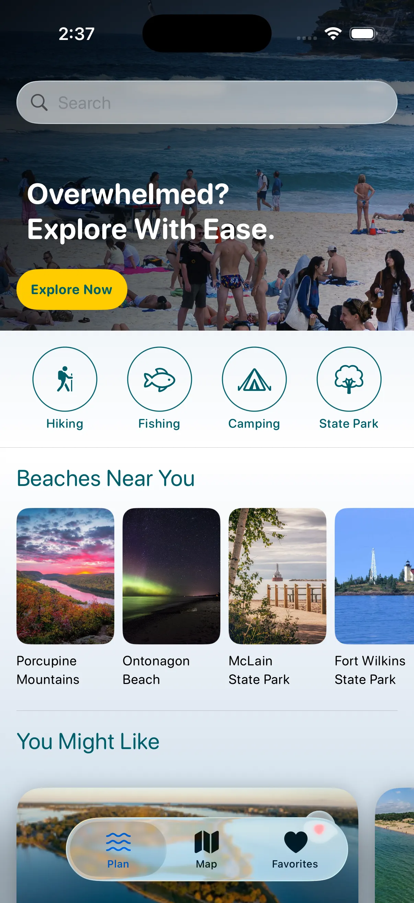
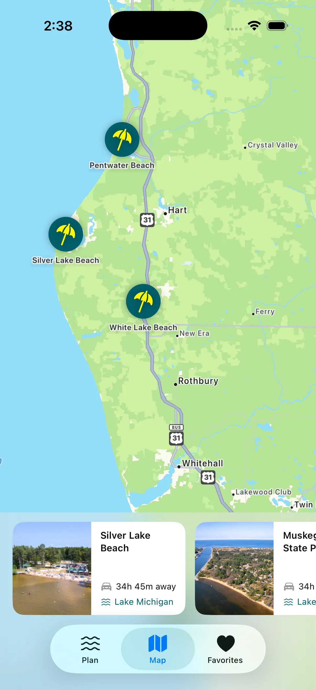
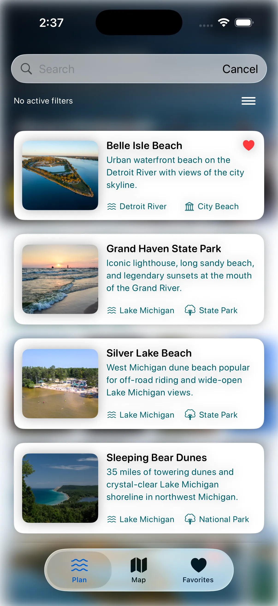
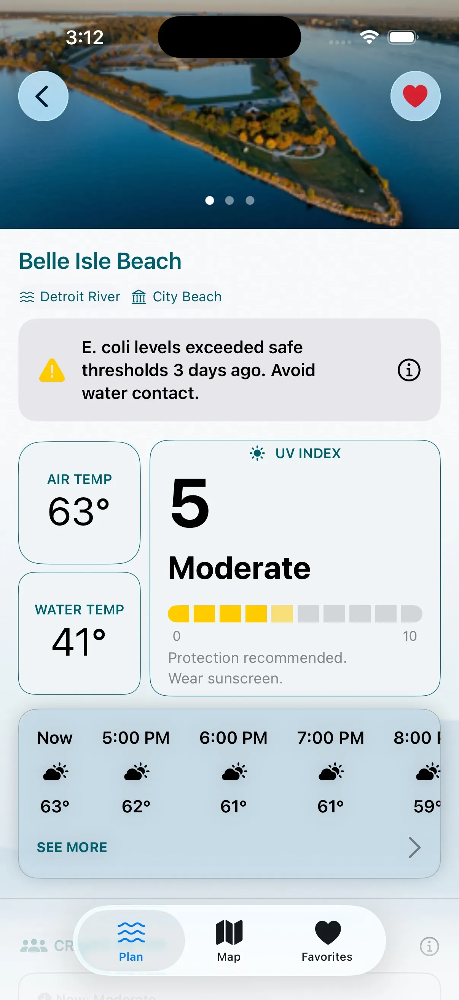
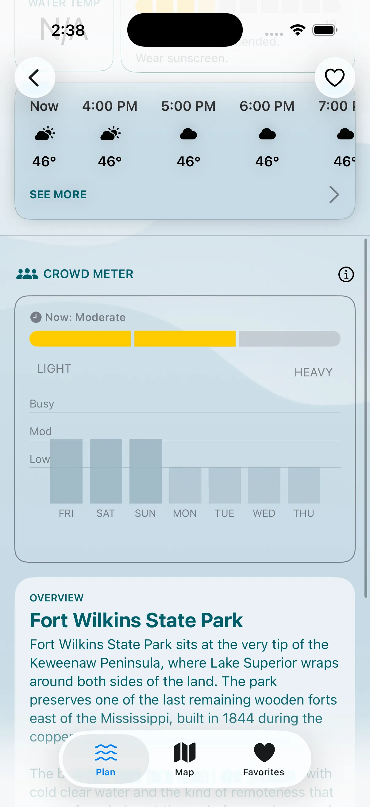
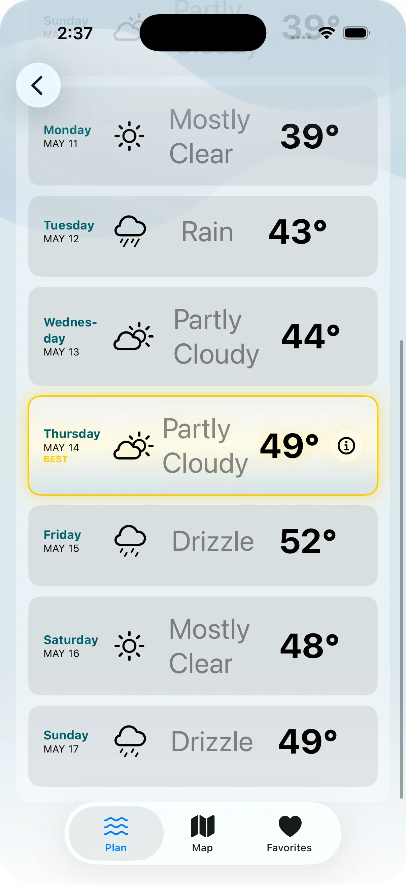
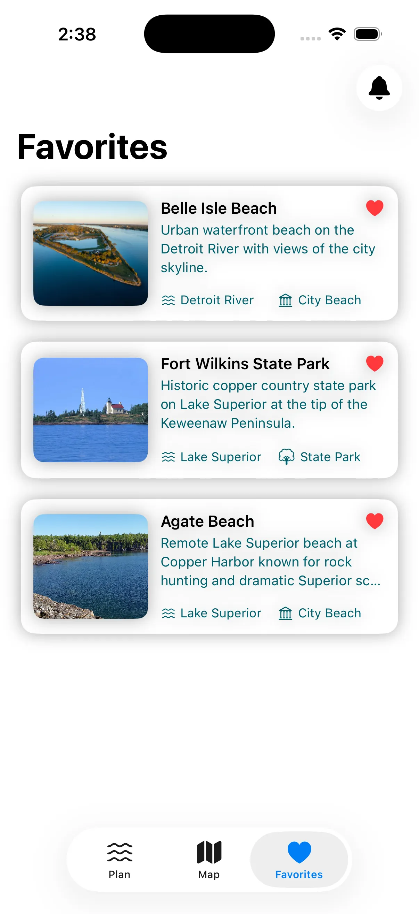
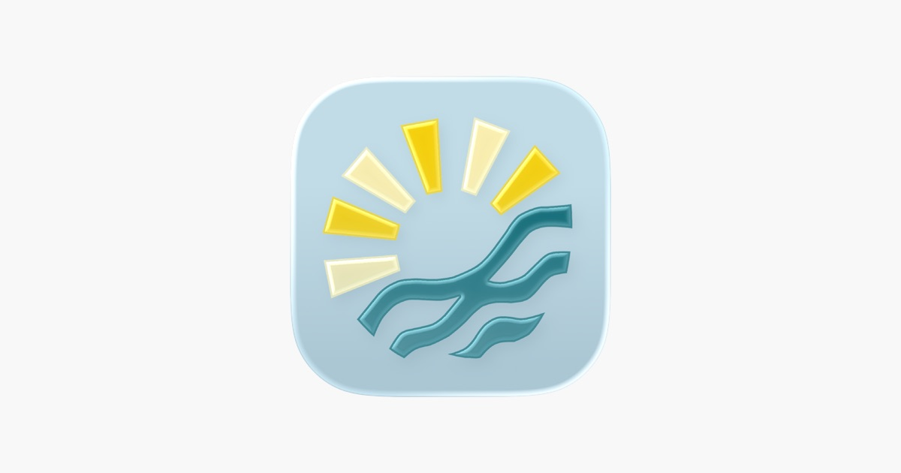

George Clinkscales Jr.
George Clinkscales Jr.CoastCast
A full-platform iOS app delivering real-time beach conditions for 54 Michigan beaches — with on-device ML crowd prediction, Siri Shortcuts, Live Activities, and a Python FastAPI backend.
The Problem
Michigan has 54 public beaches across five Great Lakes — and no single tool to answer the question every resident asks before heading out: Is it worth going today? Existing weather apps don't show water temperature, wave height, or crowd density. CoastCast solves this with one platform that pulls all of it together.
The Approach
Built as part of the MSU Apple Developer Academy program with a team of five — two developers, two designers, and a project manager — over March–April 2026. The SwiftUI app covers the map, beach scoring engine, CoreML crowd prediction, App Intents, WidgetKit, Live Activities, and notifications. The Python FastAPI backend, deployed on Render, aggregates six data sources concurrently: NOAA buoy data, water quality, NWS weather alerts, TomTom traffic, holiday detection, and a holiday crowd signal.
The crowd prediction model is an XGBoost classifier trained on 40 years of attendance data, converted to CoreML and running fully on-device. It uses cyclical month encoding so the model understands seasonal proximity, and falls back to historical Lake Michigan water temperature averages when live buoy data isn't available. The beach detail screen fires the FastAPI backend and WeatherKit simultaneously using async let, cutting load time roughly in half.
Beyond the core experience, the app ships with: a home screen WidgetKit widget that users can configure per beach, Live Activities and Dynamic Island showing crowd level and water temp while traveling, two App Intents for Siri, three-tier push notifications (daily best beach, score threshold, and NWS severe weather alerts), and a hand-built map clustering algorithm with no third-party dependencies.
Screenshots & App Experience

Home screen — discovery feed with activity filters and personalized suggestions.

Map view — custom clustering algorithm, no third-party library.

Browse list — searchable beach directory with lake type and favorites.

Beach detail — E. coli safety alert, air and water temp, UV, hourly forecast.

Crowd Meter — on-device XGBoost CoreML model trained on 40 years of data.

7-day forecast — full weekly outlook with WeatherKit conditions.

Favorites — saved beaches backed by SwiftData persistence.
The Outcome
CoastCast surfaces live beach intelligence across the app, home screen, Dynamic Island, and Siri — without opening anything. On-device CoreML means crowd predictions work offline, and the three-tier notification system covers daily alerts, score thresholds, and severe weather. Live on the App Store.
App Store

Designer Feedback
"As I further develop my discipline as a UI/UX designer, the shared vision between the developers and the designers is imperative to create an amazing final product. After working with George, I can testify that he understands the importance of proper communication, research, and hard work. He would easily take any feedback I gave him and either implement it or offer me a new perspective on it. Working with him was a smooth process and I would definitely work with him again."